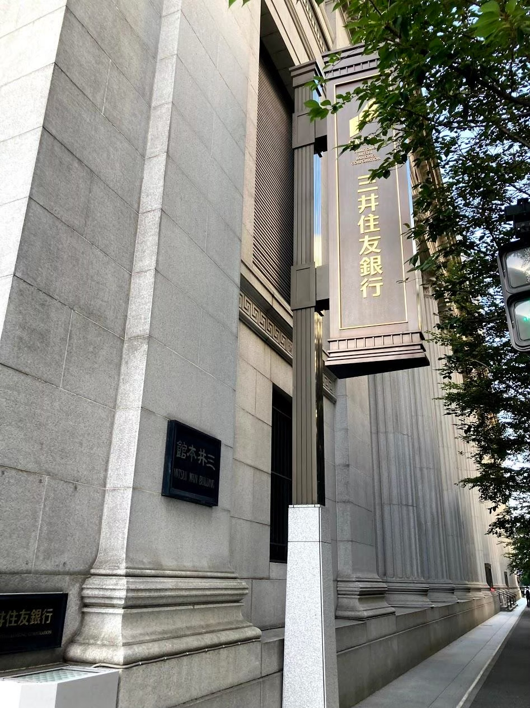

東京都心散歩
～神田・銀座・新橋～
--/-- 2021
カテゴリー：通常散歩
今回は東京駅周辺を散歩してきました。
銀座といえば高級ブランドや有名百貨店が立ち並ぶ大人な街として知られている有名な場所です。街を歩く人達が高級層に見えてきて、自分もいつかはそんな人たちになってみたいなあと思いながら散歩していました。
2019年度には神田散歩が実施されていたようで、サークルメンバーで神田カレーを食べに行っていたそうです。2021年はコロナ禍が続いているので、サークル員でカレーを食べに行ける日は当分先になると思います… 残念ですが仕方ないですね。
三井住友銀行 人形町支店 日本銀行の近くにある『三井住友銀行 人形町支店』です。建物がとても立派で、家の近くにある三井住友銀行の支店とえらい違いです。一度来店してみたいですが、僕にはまだ建物内に入る勇気はありません…。
東京市道路元標
こちらは『東京市道路元標』と呼ばれるものです。日本橋の近くにありました。こちらは国の重要文化財に指定されている貴重な文化財です。
東京駅周辺は人通りも多く、散歩するには少しばかり大変ですが、機会があればぜひ訪れてみてください。